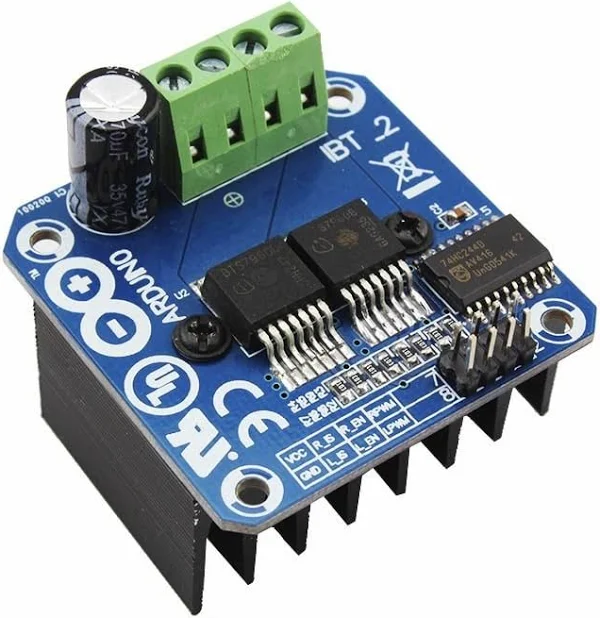
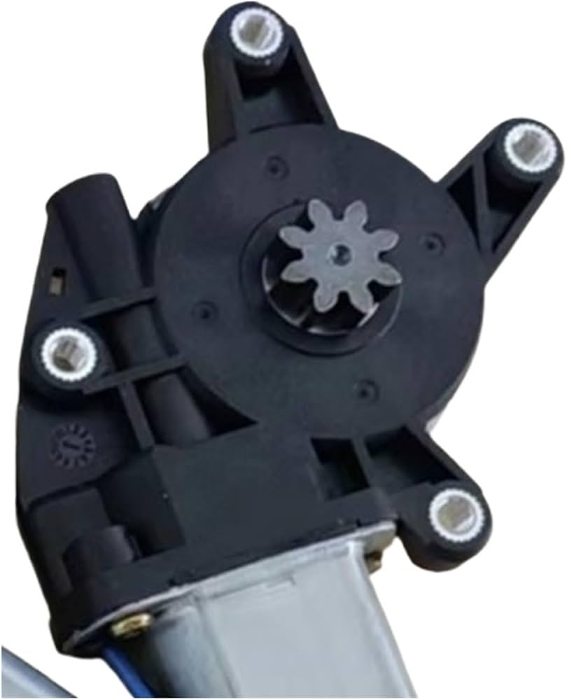
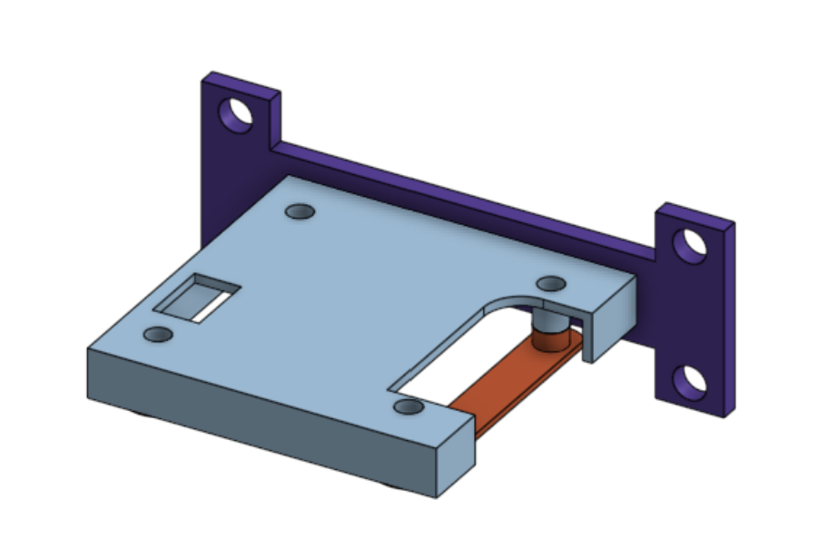
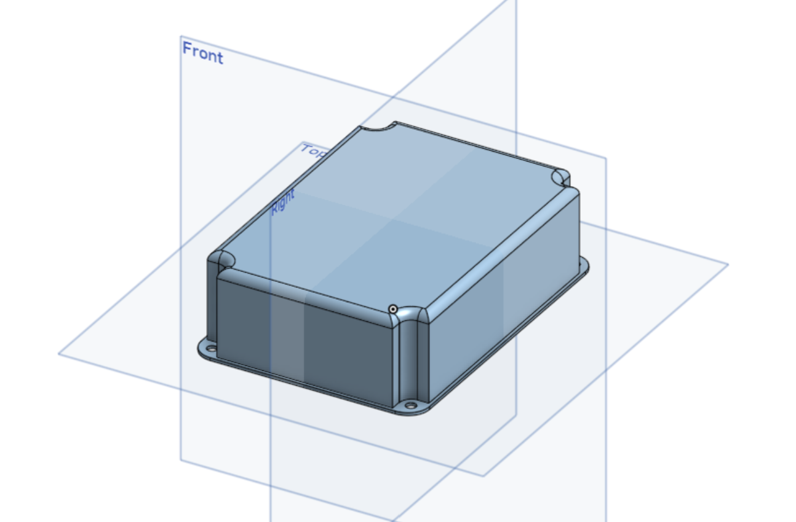
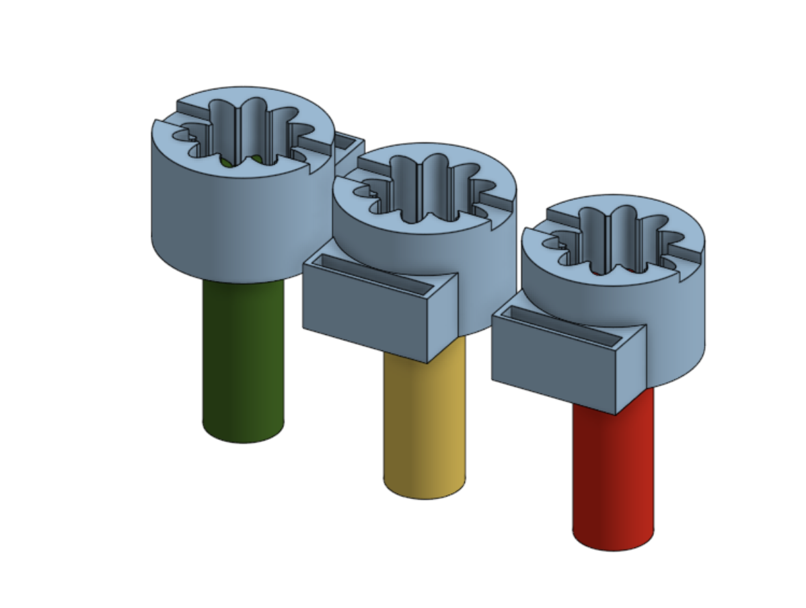
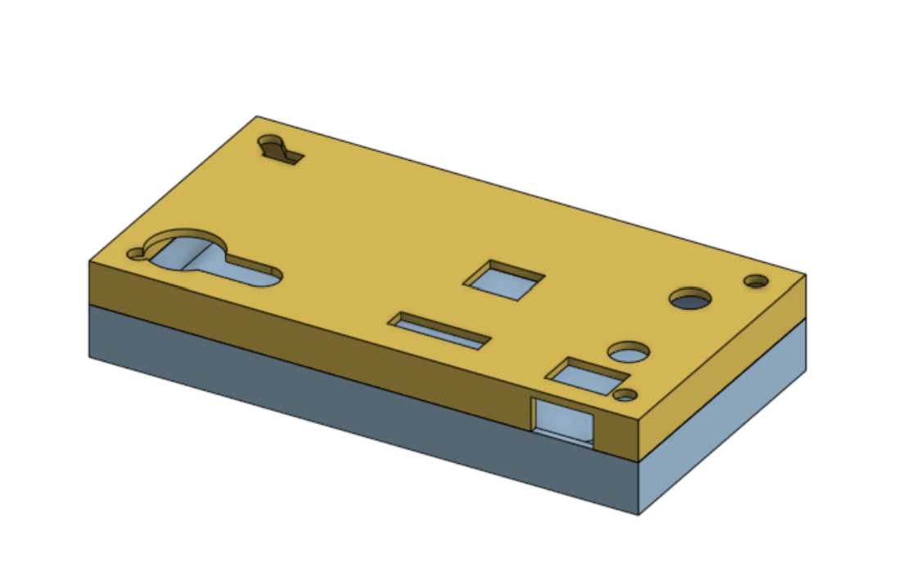

2021 · ESP8266 · Sensor Hall
IoT Cortina DIY
A la cortina de mi cuarto se le rompió la cinta. En lugar de arreglarla, decidí armar algo propio. El problema original: la cinta se trababa si bajaba demasiado rápido.
Primera versión
- Mecánica: reemplacé el sistema por un motor de auto con engranaje, montado con piezas diseñadas en Onshape e impresas en 3D.
- Potencia: un módulo puente H (tipo IBT-2) para controlar el sentido de giro y la velocidad con PWM.
- Interfaz: luces y un parlante que indican el estado (reposo, bajando, subiendo, abajo, arriba). Configuración con un control remoto infrarrojo de TV viejo.
- Cerebro: un ESP8266-12F, el microcontrolador que más usé en mis proyectos. Servía una página web local y, al conectarse por WiFi, obtenía fecha y hora para programar qué días y a qué hora subir o bajar.
El motor y el puente H
Para mover una cortina hacía falta torque, no velocidad, así que usé un motor de auto que ya viene con una reducción y un piñón de salida. El motor funciona con corriente continua: según la polaridad que reciba, gira en un sentido o en el otro.
Para invertir esa polaridad desde un microcontrolador se usa un puente H: cuatro llaves que conectan el motor a la alimentación en un sentido o en el otro. Compré un módulo ya armado, con un disipador grande, porque un motor de auto puede pedir mucha más corriente de la que soporta un pin del ESP8266. El módulo tiene entradas separadas para cada sentido y se controla con señales PWM.


Las piezas que diseñé e imprimí
Todo lo que une las partes lo diseñé en Onshape y lo imprimí en 3D:
- Soporte del driver: sujeta el módulo puente H a la pared.
- Caja de la fuente de alimentación: aloja la fuente, con orejas de fijación y esquinas redondeadas.
- Carcasa de la placa de control: aloja la placa que lo controla todo, con ventanas para los conectores, el parlante y las luces.
- Adaptadores de engranaje: el piñón del motor tenía que transmitir su giro al eje de la cortina, y no existía una pieza que lo hiciera. Armé varios modelos con la forma del piñón en el centro y probé hasta que el ajuste fuera firme. Las últimas dos variantes de la imagen tienen una ranura lateral, que es donde después puse el imán.




El problema que no había previsto
Configuré la cortina para subir y bajar durante un tiempo fijo. Era un lazo abierto: no tenía punto de referencia y nunca sabía si había llegado a donde debía.
La solución
Rediseñé el conector entre el motor y la cortina para alojar un imán, y puse un sensor de efecto Hall en la pared. El sensor cuenta las vueltas y da una posición de referencia. En ese momento no lo sabía, pero estaba armando un encoder.
Lección: un sistema sin realimentación no puede saber si cumplió su objetivo. Es una idea que sigo usando hoy en electrónica de potencia.